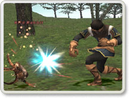
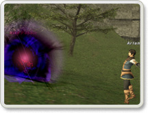
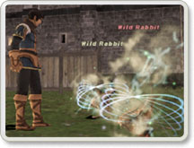
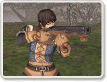
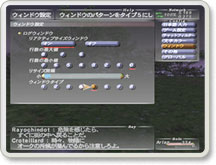
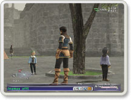
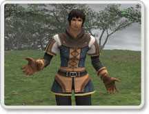
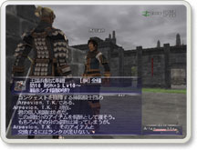

戦士
「格闘」の戦闘スキルを一段階下げました。
モンク

左手攻撃時の命中率を変更しました。ジョブアビリティ「百烈拳」と「チャクラ」の効果を変更しました。
モンクの装備品のパラメータが変更されました。
また、新たな攻撃モーションを追加しました。
白魔道士
ジョブアビリティ「女神の祝福」が敵を引きつける効果を弱めました。
赤魔道士

黒魔法「グラビデ」が入手可能になりました。
戦闘スキル「短剣」「片手剣」「片手棍棒」のスキルキャップとMP最大値を引き上げました。
シーフ
「格闘」「片手剣」のスキルキャップを上げました。
ジョブアビリティ「ぬすむ」が敵を引きつける効果を弱めました。
暗黒騎士
「両手剣」のウェポンスキルを使用可能にしました。
吟遊詩人

呪歌「魔物達のララバイ」(効果：一定範囲の敵を睡眠)が入手可能になりました。
また、吟遊詩人の歌の効果時間は全体的に短縮されたため、従来より頻繁に歌い直す必要があります。
「短剣」「片手剣」「片手棍棒」のスキルキャップをあげました。また、楽譜の店頭価格を引き下げました。
狩人

狩人専用武器「銃」の使用を解禁しました。
これに伴い矢など従来の遠隔攻撃用の消費アイテムの店頭価格を引き下げました。
また、スタック数の制限も矢、弾のみ従来の12（1ダース）単位から、99に変更しました。
合成によって作成される矢、弾も最大で99となっている反面、競売所への出品数も99単位でなければ受け付けられません。
その他銃以外にも狩人専用アイテムがいくつか追加されています。戦闘スキル「短剣」「片手剣」のスキルキャップをあげました。
獣使い
ジョブアビリティ「あやつる」コマンドでのモンスターペット化時間を5分固定に、また「使い魔」による時間延長も30分固定としました。
但し、ペットのHP残量に比例して、クリティカル攻撃を受けると残り時間に関係なくあやつりが切れるリスクがあります。
ペットのHP残量に留意ください。
「短剣」のウェポンスキルは、赤魔道士、狩人、シーフ、吟遊詩人以外のジョブの場合、制限されるようになりました。
2002年7月2日のバージョンアップにおけるレベル格差に伴う命中率修正を緩和し、ダメージ値修正に切り替えました。
既にヴァナ・ディールにはLevel70から80想定のモンスターまで配置されており、今後のレベルキャップ制限の引き上げに伴って倒せる様に設定されています。
上記変更に伴い、「調べる」コマンドでの敵の強さ判定メッセージを更に細分化し、 戦闘に不適正な程レベル格差がある相手には「とてもとても強い」などと表示されます。
これらのレベル格差がある相手には不用意に近づかないように注意するとともに、 自分のレベルにあったダンジョンやフィールドを探してください。
上記変更に連動して、時間効率的にパーティよりソロの方がより 経験値を上げやすくなってしまっていた問題に関しては、パーティ戦闘でのボーナス値に対して 再度見直しを行いました。
前述の適正な範囲内での強敵との戦闘においては、パーティの方が有利となります。
既に告知していた、一部のダンジョン内のモンスター（Ghoul等）の戦利品獲得率が上昇しています。
また、ダンジョン全般においてモンスターの戦利品や配置などが変更されています。
この変更は次週7月16日(火)にも引き続き行われる予定です。

コンフィグメニュー：ウィンドウより、8種類のウィンドウ・パターンを選択出来るようになりました。
コンフィグメニュー：その他より、画面全体の明るさ補正を行える様になりました。
（"PlayStation 2"版のみ、Windows版は従来通りRGB別ガンマ補正）
ヒーリング中に移動すると自動的にヒーリングを解除するようにしました。
ターゲットウィンドウに対象のネームカラーやアイコンなども表示されるようになりました。
テキストコマンドに /attack on、/attack off、/equip が追加されました。
詳しくは、テキストコマンド表をご覧ください。

テキストコマンド /names off、 /names on を追加しました。
名前を写したくない場合のスクリーンショット撮影などでご利用ください。
スクリーンショットをはじめとする「プレイオンライン」著作物を個人で運営するファンサイト等で使用する場合には、 「『プレイオンライン』著作物の利用ガイドライン」に沿ってご利用ください。
その他の利用は固くお断りいたします。
マップ画面で自分の現在地の座標ブロック情報が表示されるようになりました。
エリアチェンジ直後のプレイヤー同士の重なり合いを緩和するため、位置の補正が多少行われる様になりました。

以下の既存の感情表現コマンドに、新たなモーションを設定しました。
ひざまづく（/kneel）、おちこむ（/sigh）
なぐさめる（/comfort）、理解不能（/huh）
照れる（/blush）、怒る（/angry）
うんざり（/disgusted,/upset）
慌てる（/panic）、くやしい（/fume）
問い詰める（/doubt）、すねる（/sulk）
どきっとする（/shocked）
各地に様々な新しいクエストを追加しました。また従来のクエストにおいても報酬が変更されているものもあります。
各ギルドにおいて、様々な新しい合成レシピを追加しました。
また、前述の様に矢・弾の一回の合成で作成される数は99となりました。
釣りでの釣り上げ判定を変更し、ヒットした後で獲物に逃げられる確率が減りました。
競売所への出品枠を従来の8個から7個に制限しました。
これにより、出品数の多寡に関わらず、入札は自由に行えるようになりました。
各地の競売所前に説明キャラクターが配置されています。
競売所のシステムについて、再度ご確認をお願い致します。
モグハウスでのポスト確認において、競売所から送られてきたギルにカーソルを動かすと、 それがどの出品物に対しての代金か、ログウィンドウに表示される様になりました。
金額設定ウィンドウやレベルサーチウィンドウなどでの数値設定のインタフェースを、より使いやすく変更しました。

コンクェストガードの個人戦績アイテム交換時に、アイテムの詳細説明が出るようになりました。
>> close <<